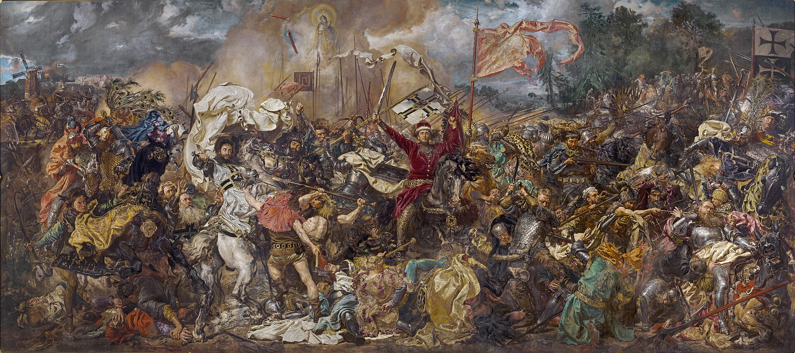
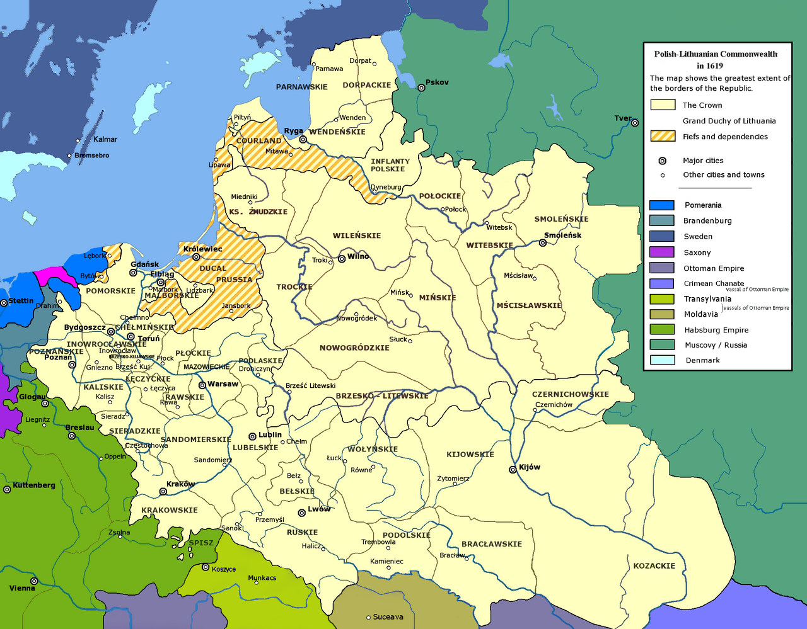
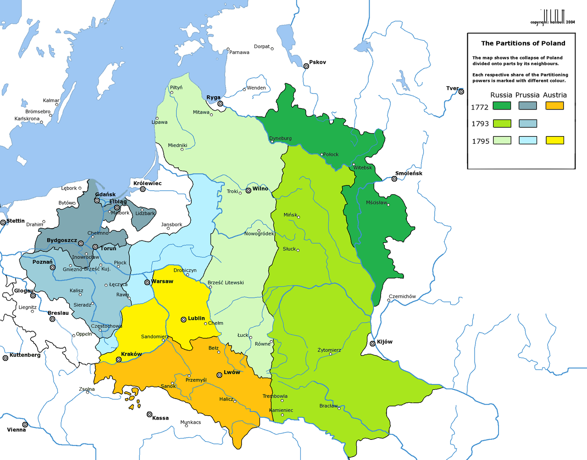
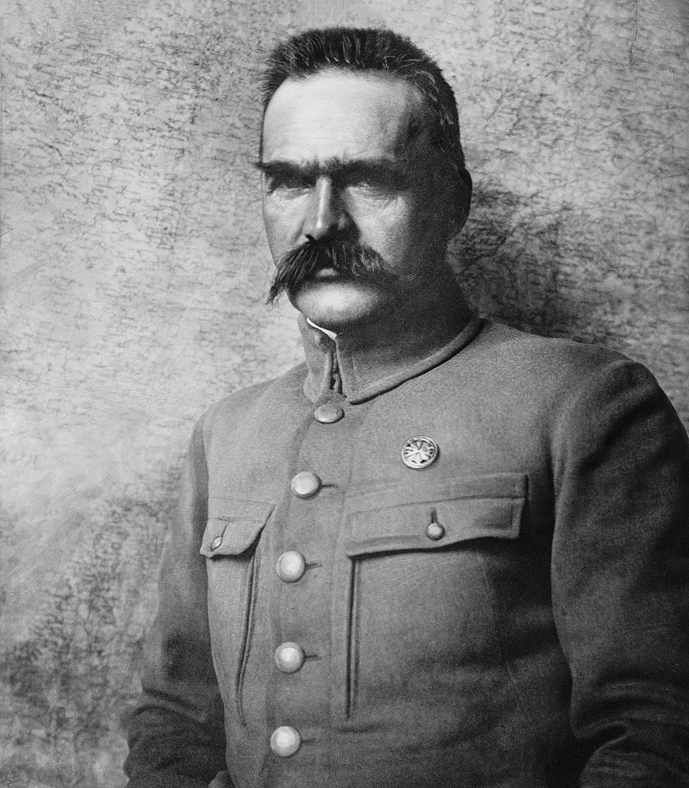
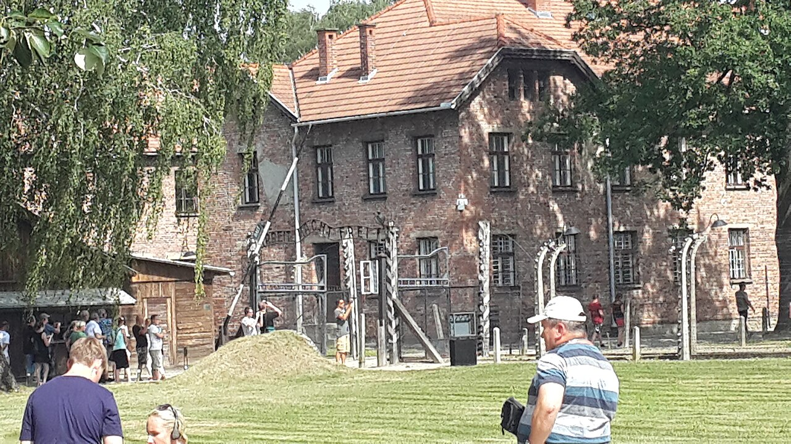
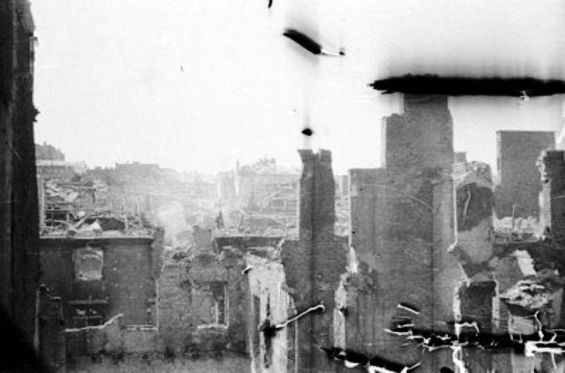
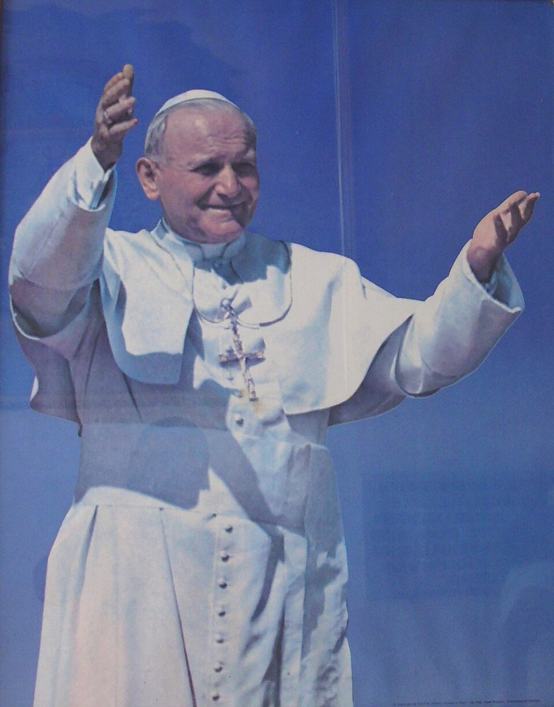
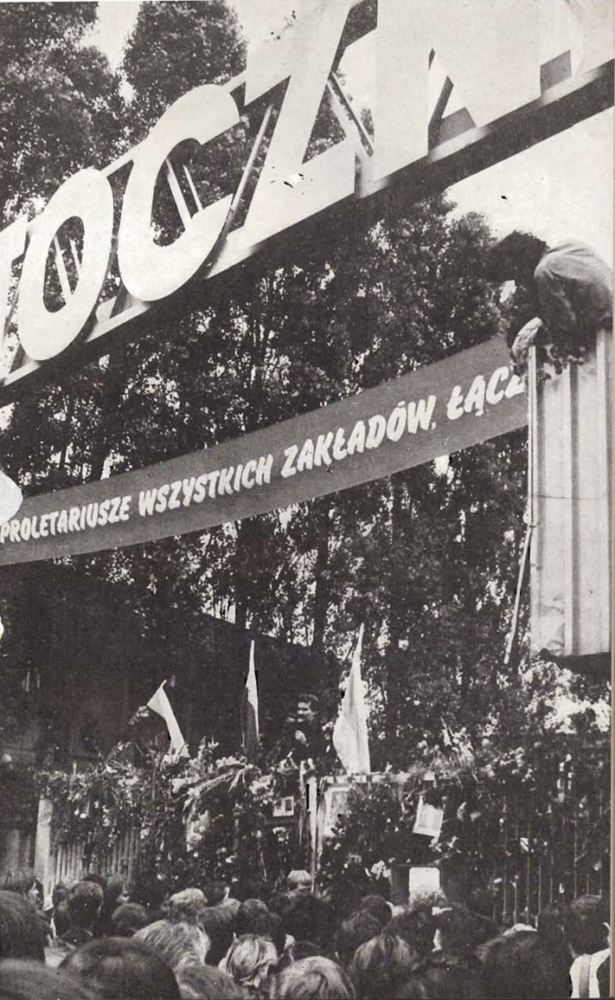
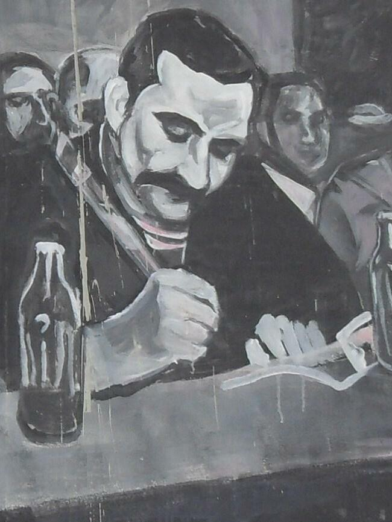

1569년 루블린 연합(Unia Lubelska)으로 폴란드와 리투아니아는 두 나라가 한 의회(세임, Sejm) 아래 모인 "양국 연방"이 되었다. 정식 명칭은 Rzeczpospolita Obojga Narodów — "두 민족의 공화국".
면적 약 100만 km² (한반도의 4.5배). 인구 약 1,100만. 당시 유럽에서 가장 큰 나라였다.
중요한 것은 크기보다 그 제도였다 — 유럽에서 가장 진보적인 정치 실험장이 여기서 벌어졌다.
1회차의 마지막 질문 — "폴란드의 상징은 모두 사라진 시대에서 왔다" — 에서 출발한다. 그 "사라진 시대"가 어떻게 시작되어, 어떻게 끝났는가. 한 나라의 죽음과 부활을 반복한 천 년을 추적한다.
1회차에서 우리는 한 가지 사실에 멈춰 섰다. 폴란드의 상징 — 백독수리·적백·"폴란드는 아직 죽지 않았다"는 국가 — 이 모두 "사라진 시대"에 만들어졌다는 사실이다. 그 사실 하나가 폴란드를 이해하는 두 번째 열쇠라고 말했다.
오늘은 그 "사라진 시대"가 정확히 무엇이었는지를 추적한다. 그리고 그 시대가 폴란드 천 년의 단 한 막이 아니라, 반복되는 패턴이었다는 사실에 도달한다.
영광 → 비극 → 부활 →
다시 비극 → 다시 부활.
폴란드 천 년의 리듬이다. — 2회차의 큰 그림
이 리듬을 네 박자로 나누어 따라가자. ① 영광의 천 년 — 한때 유럽 최대 면적의 다민족 연방이 있었다. ② 분할과 123년의 부재 — 세 강국에 의해 지도에서 사라진 시기. ③ 20세기의 두 번째 비극 — 두 번의 침공, 홀로코스트, 폐허. ④ 부활 — 1980년 그단스크의 한 조선소에서 시작되어 1989년 동구권 도미노로 이어진 자유의 회복.
이 네 박자를 손에 쥐고 폴란드를 여행하면, 박물관의 한 그림이, 광장의 한 동상이, 도시 한가운데 솟은 한 교회가, 어디서 와서 어떤 무게를 지고 있는지가 보이기 시작한다.
먼저 우리가 잊고 있던 사실 하나에서 출발한다. 폴란드는 한때 유럽에서 가장 큰 나라였다.
한국인의 머릿속 폴란드는 흔히 "20세기에 비극을 겪은 작은 동유럽 국가"다. 그러나 이 이미지는 폴란드 천 년 중 마지막 200년 정도에만 해당한다. 그 앞의 800년 동안 폴란드는 — 정확히는 폴란드-리투아니아 연방은 — 유럽의 강대국이었다.
역사학자들이 "폴란드의 탄생"으로 꼽는 해는 966년이다. 그 해, 피아스트 왕조의 시조 미에슈코 1세가 보헤미아 공주와 결혼하며 라틴 기독교 세례를 받았다. 단순한 개인 종교 행위가 아니라 정치적 결단이었다. 미에슈코는 자신의 부족 국가를 — 동방의 비잔티움(정교회)이 아니라 — 서방의 라틴 기독교 세계에 편입시키기로 선택했다.
이 결정 하나가 천 년이 지난 지금까지 폴란드의 위치를 정의한다. 1회차에서 우리가 본 "슬라브 + 라틴 + 가톨릭"의 삼중구조의 출발점이 정확히 여기다.

1385년, 폴란드는 동쪽의 리투아니아와 동군연합(同君聯合)을 맺었다. 리투아니아 대공 요가일라가 폴란드 여왕 야드비가와 결혼하며 폴란드 왕(브와디스와프 2세 야기에우워)이 된 것이다. 이로써 발트 해에서 흑해까지 — 오늘날 우크라이나·벨라루스·리투아니아 영토 전체를 포함하는 — 거대한 연합 국가가 탄생했다.
그 연합의 첫 큰 시험이 1410년 7월 15일 그룬발트(Grunwald) 전투였다. 폴란드 왕 야기에우워의 폴란드-리투아니아 연합군이, 200년 동안 발트 지역을 위협해온 독일 십자군 — 튜튼 기사단 — 을 한 번의 전투로 격파했다. 중세 유럽 최대 규모의 전투였고, 폴란드 역사의 분수령이었다.
위의 그림은 19세기 화가 얀 마테이코가 그린 것이다. 이 그림이 그려진 시기가 중요한데 — 1878년, 폴란드가 분할로 사라져 있던 시기다. 그림 자체가 "우리에게도 이런 시대가 있었다"는 기억의 회복이었다.

1569년 루블린 연합(Unia Lubelska)으로 폴란드와 리투아니아는 두 나라가 한 의회(세임, Sejm) 아래 모인 "양국 연방"이 되었다. 정식 명칭은 Rzeczpospolita Obojga Narodów — "두 민족의 공화국".
면적 약 100만 km² (한반도의 4.5배). 인구 약 1,100만. 당시 유럽에서 가장 큰 나라였다.
중요한 것은 크기보다 그 제도였다 — 유럽에서 가장 진보적인 정치 실험장이 여기서 벌어졌다.
연방의 제도는 당시 유럽 기준으로 거의 SF 같았다.
여기서 살았던 인물 중 한 명이 — 모두가 학교에서 배웠을 — 그 니콜라우스 코페르니쿠스(1473–1543)다. 폴란드 토룬(Toruń)에서 태어나 평생을 폴란드 영토 안에서 살았다. "폴란드 사람이 세상을 돌렸다"는 폴란드인이 자랑스럽게 말하는 한 줄이다.
영광의 정점은 1683년 9월 12일 빈 전투(Wiedeń)다. 오스만 제국이 신성로마제국 수도 빈을 두 달 넘게 포위하고 있었고, 합스부르크 황제는 항복을 검토하던 중이었다. 이때 폴란드 왕 얀 3세 소비에스키가 폴란드 기병 후사르(Husaria) 약 25,000명을 이끌고 빈을 향해 진군했다.
9월 12일 새벽, 소비에스키의 후사르 기병이 칼렌베르크 산에서 오스만 진영을 향해 돌진했다 — 역사상 최대 규모의 기병 돌격 중 하나로 기록된다. 오스만은 패주했고, 빈은 살아났다.
이 승리 이후 약 50년 동안 폴란드는 "기독교 세계의 방패"(Antemurale Christianitatis)라는 자기 이미지를 굳혔다. 그러나 — 다음 Beat의 어두운 아이러니로 이어지는데 — 폴란드는 빈을 구하고 자기 자신은 못 구했다.
유럽 최대의 나라가 어떻게 100년 안에 지도에서 사라졌는가. 그 답은 자유의 역설에 있다.
폴란드 연방의 의회 세임(Sejm)에는 17세기 중반부터 한 가지 권리가 굳어졌다. 리베룸 베토(Liberum Veto) — 단 한 명의 의원이 "Nie pozwalam!"("나는 동의하지 않는다!")라고 외치면 전체 의회가 무효화되는 권리다. "자유로운 거부권".
이 제도는 처음엔 "한 명도 강요받지 않는다"는 자유의 극단으로 출발했다. 그러나 외세가 의원 한 명만 매수하면 폴란드 의회를 마비시킬 수 있다는 뜻이기도 했다. 1652년 처음 행사된 후, 18세기에는 회기의 절반 이상이 단 한 명의 베토로 끝났다. 폴란드는 결정을 내리지 못하는 나라가 되어갔다.
같은 시기 주변국들 — 러시아·프로이센·오스트리아 — 은 절대주의 군주제로 빠르게 중앙집권화하고 있었다. 폴란드만 시간이 멈춘 듯 보였다.

러시아·프로이센·오스트리아가 폴란드 영토의 약 30%를 나눠 가짐. 폴란드 의회는 협박 속에 분할을 추인할 수밖에 없었다.
분할의 충격으로 폴란드 엘리트는 뒤늦은 개혁에 착수. 4년에 걸친 의회에서 근대 국가의 틀을 짜기 시작한다.
미국 헌법(1787)에 이어 세계에서 두 번째, 유럽 최초의 근대 성문 헌법. 리베룸 베토 폐지, 권력 분립, 시민권 확대. 그러나 너무 늦었다.
개혁에 위협을 느낀 러시아와 프로이센이 폴란드 영토 추가 분할. 5월 3일 헌법은 폐지된다.
미국 독립전쟁에 참전했던 타데우시 코시치우슈코가 봉기를 이끌었으나 패배. 마지막 저항이 진압된다.
세 강국이 남은 폴란드 영토를 마저 나눠 가진다. 폴란드는 지도에서 완전히 사라진다.

1791년 5월 3일, 바르샤바의 왕궁에서 폴란드 의회는 새 헌법을 가결했다. 미국 헌법(1787)에 이어 세계에서 두 번째, 유럽에서 첫 번째 근대 성문 헌법이었다.
리베룸 베토는 폐지되었고, 권력은 입법·행정·사법으로 분립되었다. 도시민에게 정치적 권리가 확대되었고, 농민에 대한 국가의 보호가 강화되었다.
그러나 이 헌법은 채택 1년 4개월 뒤인 1793년에 폐지된다. 너무 늦은 개혁이었다. 오늘날까지 폴란드는 5월 3일을 헌법의 날(Święto Konstytucji 3 Maja) 국경일로 기념한다 — 비록 그 헌법이 한 해를 가지 못했어도.
폴란드가 지도에서 사라진 123년 동안, "폴란드인"은 법적으로 존재하지 않는 사람들이었다. 러시아령 폴란드인, 프로이센령 폴란드인, 오스트리아령 폴란드인이 있을 뿐.
그러나 그들은 자신을 폴란드인이라고 부르기를 멈추지 않았다. 봉기로, 시로, 음악으로, 학교로, 그리고 가톨릭 교회로 — 폴란드는 국가 없이 살아남았다.
러시아령 폴란드에서 일어난 첫 대규모 봉기. 진압된 후 약 1만 명의 폴란드 엘리트가 서유럽으로 망명한다. 그 중 한 명이 — 프레데리크 쇼팽이다.
두 번째 대봉기. 더 가혹한 진압. 시베리아 유배자만 38,000명. 이후 무력 저항보다 "유기적 작업"(praca organiczna) — 학교·언론·경제를 통한 정체성 보존 — 으로 노선 전환.
1차 세계대전 종전과 함께 러시아·독일·오스트리아 제국이 동시에 무너졌다. 그 빈틈에서 유제프 피우수트스키가 권력을 잡고 폴란드 공화국을 선포. 123년 만의 부활.

독립 후 곧바로 닥친 시험은 1920년 폴란드-소비에트 전쟁이었다. 적군(붉은 군대)이 바르샤바 코앞까지 진격해 폴란드의 두 번째 죽음이 임박해 보였다.
1920년 8월 13–25일, 피우수트스키가 바르샤바 외곽에서 적군을 격파했다. "비스와의 기적"(Cud nad Wisłą)이라 불린 이 승리는, 폴란드만이 아니라 — 당시 평가에 따르면 — 서유럽 전체로의 공산주의 확산을 막은 사건이기도 했다.
2공화국은 약 20년 동안 — 1939년까지 — 유지되었다.
부활한 폴란드는 20년 동안 숨을 쉬었다. 그러고는 — 한 세대 만에 — 폴란드 역사상 가장 깊은 비극에 빠진다.
1939년 9월 1일 새벽 4시 45분, 나치 독일이 폴란드를 침공했다. 군사적으로는 일방적이었다. 폴란드군의 저항에도 불구하고 독일 기갑부대는 빠르게 진격했다.
9월 17일, 동쪽에서 또 한 번의 침공이 시작되었다. 소련 적군이 폴란드 동부로 진입했다. 한 달 전 8월 23일, 나치 독일과 소련은 비밀리에 몰로토프-리벤트로프 협정을 맺어 폴란드를 둘로 나누기로 합의해 둔 상태였다 — 1차 대전 후 단 21년 만에 폴란드는 다시 분할되었다.
10월 초, 폴란드 군사 저항은 종결되었다. 그러나 폴란드는 1945년까지 5년 8개월 동안 점령 상태에서도 — 망명정부, 지하국가, 국내군(Armia Krajowa) — 을 통해 동맹국 측에서 가장 큰 비밀 저항 조직을 유지했다.

홀로코스트의 지리는 특히 폴란드와 깊이 얽혀 있다. 나치 독일이 운영한 6개의 절멸수용소 — 체움노, 베우제츠, 소비보르, 트레블린카, 마이다네크, 그리고 가장 큰 아우슈비츠 — 가 모두 점령된 폴란드 영토에 세워졌다. 이는 우연이 아니다. 폴란드 영토에 유럽 최대의 유대인 공동체가 있었고(전쟁 전 약 330만 명), 베를린에서 멀리 떨어져 비밀 유지가 쉬웠기 때문이다.
홀로코스트는 인류 보편의 비극이지만, 폴란드 영토 위에서 벌어졌다는 사실은 폴란드인의 자기 인식에 무거운 흔적을 남겼다. 폴란드를 여행할 때 — 특히 크라쿠프 인근 아우슈비츠를 방문할 때 — 이 무게 위에 서 있다는 사실을 함께 가지고 가는 것이 한 권의 책보다 중요하다.
점령은 두 방향에서 왔고, 학살도 두 방향에서 왔다. 1940년 4–5월, 소련 NKVD는 점령한 폴란드 동부에서 폴란드군 장교·경찰·지식인 약 22,000명을 처형해 묻었다. 가장 잘 알려진 매장지가 러시아 서부 카틴 숲이라 이 사건은 "카틴 학살"로 불린다.
1943년 독일군이 매장지를 발견해 발표했으나, 소련은 부인했다. 폴란드 내 공산주의 체제(1944–89) 시기에는 카틴은 공식적으로 "독일의 짓"이었고, 다르게 말하면 처벌받았다. 진실은 1990년 4월이 되어서야 — 고르바초프의 소련이 — 인정했다.
2010년 4월 10일, 카틴 학살 70주년 추도식에 가던 폴란드 대통령 부부와 군 수뇌부, 의원, 가톨릭 고위 성직자 등 96명이 탑승한 비행기가 러시아 스몰렌스크에서 추락해 전원 사망한 사건은, 폴란드 현대사의 가장 아픈 사건 중 하나로 남아 있다.

1944년 8월 1일 오후 5시, 바르샤바의 국내군(Armia Krajowa) 약 40,000명이 일제 봉기를 일으켰다. 소련 적군이 비스와 강 동안까지 진격해 있었고, 봉기군은 적군이 합류하기 전에 자력으로 도시를 해방해 폴란드 망명정부의 정통성을 확보하려 했다.
그러나 소련 적군은 비스와 강을 건너지 않고 멈췄다. 봉기군은 63일 동안 단독으로 싸웠고, 결국 항복했다.
독일군은 항복 후 도시를 — 보복으로 — 의도적으로 파괴했다. 폭파, 방화, 약탈이 조직적으로 이루어졌고, 1945년 1월 적군이 입성했을 때 바르샤바의 건물 약 85%가 파괴되어 있었다.
오늘 우리가 바르샤바 구시가지(Stare Miasto)에서 보는 17세기 건물들은 — 거의 모두 — 1950년대에 다시 쌓아 올린 것이다. 폴란드 정부와 시민은 1945년 폐허 위에서 옛 그림과 사진을 토대로 도시를 원래 모습 그대로 재건했다. 이 작업이 인정받아 바르샤바 구시가지는 1980년 유네스코 세계유산에 등재되었다 — "재건된 도시"로서는 이례적인 등재다.
구시가지의 벽돌이 너무 깨끗하다고 느낀다면, 그것은 잘 본 것이다. 그 깨끗함이 곧 바르샤바의 역사다.
1945년 5월, 폴란드는 동맹국 측의 승전국이었다. 자국 영토에서 가장 큰 비밀 저항 조직을 운영했고, 영국 본토 항공전에 폴란드 비행사들이 결정적 기여를 했으며, 이탈리아·노르망디 전선에 폴란드군이 참전했다.
그러나 1945년 2월 얄타 회담에서 폴란드의 전후 운명은 — 폴란드의 동의 없이 — 결정되었다. 동부 영토(빌나·리비프 포함, 약 18만 km²)는 소련에, 그 대가로 서부 영토(슈체친·브로츠와프 포함, 약 10만 km²)는 독일에서 폴란드로 이전. 국경 전체가 서쪽으로 약 200km 이동했다.
그리고 정치 체제는 사실상의 소련 위성국으로 굳어졌다. 승전국이면서 동시에 자유를 잃은 나라로 — 폴란드는 다음 44년을 보낸다.
두 번째 자유의 회복은 — 첫 번째 때와 달리 — 전쟁이 아닌 노조와 미사에서 시작되었다.
1944년부터 1989년까지 폴란드는 공식 명칭 폴란드 인민공화국(Polska Rzeczpospolita Ludowa)으로 — 소련의 위성국으로 — 존재했다. 일당 독재였고, 경제는 국유화되었으며, 비밀경찰은 국민을 감시했다.
그러나 폴란드의 공산 통치는 다른 동구권 국가들과 한 가지 결정적 차이가 있었다 — 가톨릭 교회가 절대 통제되지 않았다. 폴란드 인구의 90% 이상이 가톨릭이었고, 교회는 본당·수도원 단위로 자율을 지켰다. 정권이 마지막까지 손대지 못한 공간이었다.
그 공간에서 — 단계적인 — 저항이 자라났다.
식료품 가격 인상에 대한 노동자 항의. 군대 진압으로 약 70명 사망. 그러나 직후 정권 내부 변화로 약간의 자유화가 도입됨.
바르샤바대학교 학생 시위. 반유대주의 정화 운동으로 이어져, 폴란드에 남아 있던 유대인 약 15,000명이 추가로 출국한다.
조선소 노동자 시위. 진압 과정에서 41명 사망. 그단스크는 이후의 결정적 무대가 된다.
지식인들이 노동자와 손잡은 첫 조직. 1980년 연대운동의 인력 기반이 여기서 만들어진다.

1978년 10월 16일, 크라쿠프 대주교 카롤 보이티와가 교황으로 선출되었다. 455년 만의 비(非)이탈리아인 교황이자, 역사상 첫 슬라브계 교황이었다. 즉위명 요한 바오로 2세.
이듬해 1979년 6월 2–10일, 그는 폴란드를 9일간 방문했다. 폴란드 출신의 교황이 — 공산국가가 된 — 조국을 처음 방문한 것이다. 약 1,300만 명, 인구의 3분의 1이 그를 직접 본 것으로 추산된다.
그의 한 문장이 폴란드 현대사를 바꾸었다.
Nie lękajcie się.
두려워하지 마시오. — 요한 바오로 2세, 1979년 6월 빅토리아 광장 미사
역사학자들은 이 9일이 — 다른 어떤 사건보다 — 폴란드인의 두려움을 풀어놓았다고 본다. 한 신부의 표현을 빌리면, "우리가 우리 자신이 얼마나 많은 사람인지를 처음 본 9일."
일 년 뒤 그단스크에서 일어난 일은, 이 9일 없이는 설명되지 않는다.

1980년 8월 14일, 그단스크 레닌 조선소에서 파업이 시작되었다. 도화선은 단순했다 — 노조 활동가 안나 발렌티노비치(Anna Walentynowicz)의 부당 해고. 그러나 파업은 빠르게 전국으로 번졌다.
파업 노동자들은 한 사람을 지도자로 세웠다. 1976년 해고된 후 조선소에 다시 잠입해 들어온 전기공 — 레흐 바웬사(Lech Wałęsa). 그가 조선소 담을 넘어 들어와 파업 위원회 위원장이 된 장면은 폴란드 역사의 상징적 순간으로 남아 있다.
17일의 협상 끝에 1980년 8월 31일, 그단스크 합의(Porozumienia Sierpniowe)가 서명되었다. 동구권 사상 처음으로 당으로부터 독립한 자유 노조의 결성이 인정되었다.

9월, 새 노조의 이름이 결정되었다 — NSZZ "Solidarność"(독립자치노조 "연대"). 결성 1년 만에 회원 약 1,000만 명으로 폭증했다. 폴란드 인구의 4분의 1이었다.
연대는 단순한 노조가 아니라 — 폴란드 사회 전체의 자기 조직이었다. 노동자, 지식인, 농민, 가톨릭 교회가 한 깃발 아래 모였다.
그러나 1981년 12월 13일, 야루젤스키 장군이 계엄령을 선포했다. 연대 지도자 대부분이 체포되었고, 조직은 지하로 들어갔다. — 그러나 해체되지 않았다.
1988년 다시 파업이 폴란드 전역에서 번졌다. 경제는 파탄이었고, 정권은 마지막 카드를 던졌다 — 지하 연대 지도부와의 직접 협상.
1989년 2월 6일 – 4월 5일, 바르샤바에서 원탁회의(Okrągły Stół)가 열렸다. 한 달 반의 협상 결과 — 폴란드 의회 일부 의석을 자유 경선으로 뽑기로 합의되었다.
1989년 6월 4일 자유선거 — 같은 날 베이징 천안문에서 사건이 벌어진 그 날 — 폴란드 연대는 자유 경선 의석 161석 중 160석을 압승했다. 결과는 정권의 예측을 완전히 빗나갔다.
8월, 동구권 최초의 비(非)공산주의 총리 — 타데우시 마조비에츠키(Tadeusz Mazowiecki) — 가 임명되었다. 그리고 그 해 가을, 동구권 도미노가 시작되었다 — 11월 베를린 장벽, 12월 체코슬로바키아의 벨벳 혁명, 12월 루마니아. 단, 그 도미노의 첫 패는 폴란드였다.
1990년 바웬사가 직선 대통령으로 당선되었다. 1991년 12월 31일, 폴란드 인민공화국이라는 명칭이 사라지고 폴란드 공화국(Rzeczpospolita Polska)이라는 옛 이름이 되돌아왔다.
그 후 폴란드는 — 1회차에서 본 — 가장 빠른 서방 통합의 길을 걸었다.
오프닝에서 우리는 폴란드 천 년의 리듬을 — 영광 → 비극 → 부활 → 다시 비극 → 다시 부활 — 이라는 네 박자로 정리했다.
네 박자를 모두 따라온 지금, 한 가지가 분명해진다. 폴란드의 정체성을 만든 것은 영광의 시기가 아니라 부재의 시기였다. 야기에우워 왕조의 화려함이 폴란드를 만든 게 아니다. 분할의 123년, 점령의 6년, 위성국의 44년 — 폴란드라는 나라가 폴란드가 아니었던 그 시간들이 폴란드를 만들었다.
Jeszcze Polska nie zginęła,
kiedy my żyjemy.
폴란드는 아직 죽지 않았다, 우리가 살아 있는 한. — 1797년에 쓰여서, 1918·1989에 증명된 한 문장
1회차에서 우리가 본 폴란드 국가의 첫 줄 — "폴란드는 아직 죽지 않았다" — 은 1797년의 희망이었다. 그러나 2회차의 끝에서 다시 읽으면, 그것은 희망이 아니라 예언이었음이 드러난다.
1918년 부활은 1797년 가사를 한 번 증명했다. 1989년 부활은 그것을 두 번 증명했다.
이 천 년의 답을 손에 쥐고 폴란드를 여행하면, 박물관의 한 그림이, 광장의 한 동상이, 도시 한가운데 솟은 한 교회가 무엇을 노래하고 있는지가 들리기 시작한다. 그 모든 것이 — "우리가 살아 있는 한" 이라는 한 문장의 변주다.